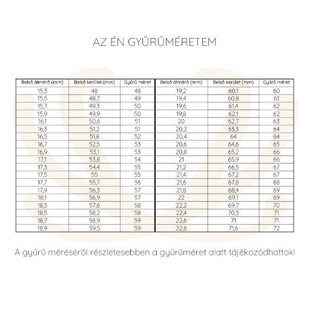

ÉKSZEREINKRŐL
ÁSVÁNY ÉKSZEREK
A természet varázslatos alkotásai a föld mélyében születő drágakövekben, szebbnél szebb ásványokban, csillogó féldrágakövekben is megnyilvánul. Egy-egy ásványékszer által érezhetjük a föld erejét, gyönyörködhetünk a természet szépségében úgy, hogy az közben minket is ékesít. Gyönyörködjetek változatos kínálatunkban, melyben többek között ametiszt, rózsakvarc, hegyi kristály, számtalan achát ékszer található.
TENYÉSZTETT GYÖNGY ÉKSZEREK - AZ IDŐTLEN SZÉPSÉG
Az ember ősidők óta csodálattal tekintett a gyöngyhalászok által a tenger mélyéről felszínre hozott, különleges módon születő, ritka gyöngyökre, melyek a szépség, tisztaság és gazdagság jelképévé váltak. Régen csak a jómódú előkelőségek kiváltsága volt a gyöngy ékszerek birtoklása. Szerencsére, az emberi találékonyságnak köszönhetően, ma már minden hölgy számára elérhetőek a tenyésztett édesvízi gyöngyből készült ékszerek. Ahogyan a neve is mutatja, a kagylókat tavakban, folyókban gondozzák, hogy a testükbe helyezett apró gyöngyház golyócskán 3-8 év alatt a kagyló megalkossa az édesvízi gyöngyszemet, amelyből készült ékszerek mindig a finom eleganciát, örök szépséget, letisztult stílust idézik. Mi egyetértünk az ókori görögök hitével, mely szerint a gyöngy ékszerek boldogságot visznek a házasságba, ezért is ajándékoztak előszeretettel gyöngy ékszereket az ifjú párnak, és viseltek gyöngyöt az esküvőkön. Rajtunk ne múljon senki boldogsága! Válasszatok kedvetekre igényes kínálatunkból!
GYŰRŰMÉRÉS
Hogyan mérjem le? Amire szükséged lesz: egy vékony zsinór, vonalzó vagy mérőszalag. Ha van gyűrűd, akkor egyszerű dolgod lesz: mérd meg a gyűrűd belső oldalát milliméterre pontosan! Ha nincs gyűrűd, akkor sincs gond: A zsinórt tekerd a kiválasztott ujjadra úgy, hogy megállapítható legyen milyen hosszú körben az ujjad, majd azon a ponton jelöld meg vagy vágd le a zsinórt. Fontos, hogy ne legyen túl szoros (hiszen a gyűrűt le is kell húznod), de túl bő se legyen (mert akkor meg leesik a gyűrűd). Vonalzóval vagy mérőszalaggal mérd meg a zsinór hosszát, lehetőleg milliméterre pontosan! A kapott értéket (mm) a táblázatból kiválasztod, és megkapod a gyűrűméretednek megfelelő számot, így már sokkal egyszerűbb a lesz a választás. :)
